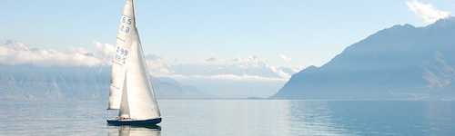
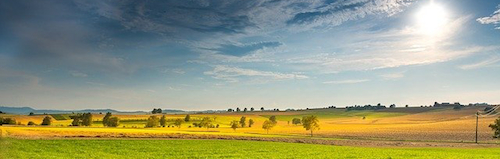
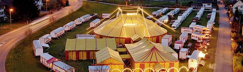
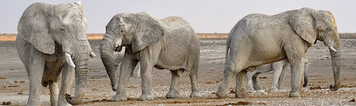
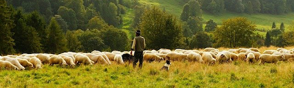

SeuratJS
A Raphaël plugin for creating beautiful pointilized animations.
Pointilize and Pixelize all on the Client Side
SeuratJS is a JavaScript library that extends Raphaël and allows for the creation of vivid animations and pixelated artwork using minimal code. It does this by extacting color data from an image of your choice and rebuilding the original with filled graphical primitives in SVG. Seurat makes it extremely easy to alter what primitives are generated (how they look and where they appear) and how they animate.
SeuratJS uses the HTML5 canvas to parse color data and, because of this, the library operates entirely on the client side.
The Basics (Click the images!)

paper.seurat({ imageSource: 'gray-weather.png' });
paper.seurat({ imageSource: 'fort-samson.png', shape: "rect"});Now Let's Get Things Moving (Keep clicking!)

paper.seurat({ imageSource: 'circus.png',
attributes: {r: 2, stroke: "none"},
animator: function(elm, x,y,step){
var anim = Raphael.animation({r: 7}, 350);
elm.animate(anim.delay(35*y));
});

paper.seurat({ imageSource: 'eiffle-tower.png',
animator: function(elm,x,y,step){
var anim = Raphael.animation({cx: 2, cy: 2, r: 1}, 2e3,
function(){
var anim = Raphael.animation({cx: (x+step/2),
cy: (y+step/2), r: (step/2-1)}, 2e3);
elm.animate(anim.delay(500+x*5+y*7))
});
elm.animate(anim.delay(500+x*10+y*10));
}});

paper.seurat({ imageSource: 'circus-sideshow.png',
animator: function(elm,x,y,step){
var anim = Raphael.animation({cx: (Math.random()*720),
cy: (Math.random()*180), r: (Math.random()*15)}, 2e3,
function(){
var anim2 = Raphael.animation({cx: (x+4), cy: (y+4),
r: (step/2-1)}, 2e3);
elm.animate(anim2.delay(500));
}).delay(Math.random()*2000);
elm.animate(anim);
}});

paper.seurat({ imageSource: 'laborers.png',
step: 6,
generator: function(ppr,x,y,color,step,attributes){
return ppr.circle(x, 1, step/2-1)
.attr({fill: color}).attr(attributes);
},
animator: function(elm,x,y,step){
var anim = Raphael.animation({cx: x, cy: y, r: 4}, 2e3);
elm.animate(anim.delay(500));
}
});
Take it for a Spin
Now that you’ve seen how easy it is to use SeuratJS, grab a copy off the source, a copy of RaphaelJS, and create some stunning work of your own. The examples above are a great starting point and demonstrate using all of the settings. However, for a more complete reference, the various settings are enumerated below.
imageSource - A path to the image you are going to pointalize. REQUIRED
step - A number determining the pixels between color samples in the image. Used for both the x and y directions. By default 10.
shape - A string indicating which built in Raphaël element generator to use. Either 'circ' or 'rect'. By default 'circ'.
attributes - An associative array describing the attibutes each Raphaël element will have to start. By default {stroke: "none"}.
animator(element,x,y,step) - A function to provide each Raphaël element with an animation. element is a generated Raphaël element with the color sample from (x,y). step is as described above.
generator(paper,x,y,color,step,attributes) - A function to create a Raphaël element corresponding to sample (x,y) from the source image. paper is the Raphaël object we are drawing to. step and attributes are as described above. This function must return a Raphaël element object.
Compatibility and Performance
SeuratJS' performance is largely tied to your browser's ability to handle SVG. SeuratJS runs extremely well in IE9 and Chrome. Surprisingly, Firefox can be slightly choppy with a large number of elements.
Long story short, the fewer things moving at one time, the smoother your animation is going to be. If you run into a situation where performance is unsatisfactory, either increase the step size when calling seurat() or increase your animation delays until performance is to your liking.
Authors and Contributors
SeuratJS is the work of Greg Smith (@gsmith85). A special thanks to Scott Werner (@swerner) for being a second pair of eyes.
Anyone else out there, feel free to contribute! If you find a bug, report it. If you want to write some code, hack it. If you want to make suggestions, let us know what you need. Let's build something awesome together!